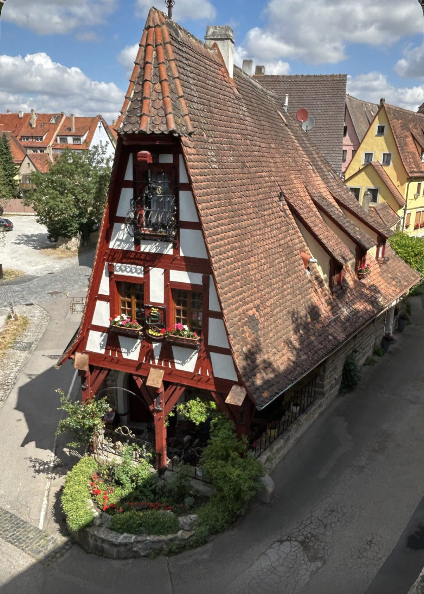

Carnet de route • Allemagne 2026
Sur la route des contes de Grimm… et bien au-delà
23 jours pour traverser une partie de l’Allemagne avec Léon, des villes et villages liés aux frères Grimm jusqu’aux rives du Rhin, en passant par le nord du pays et quelques très belles surprises.
23
jours
22
nuits
1 720 km
en Allemagne
11/07 → 02/08
2026
Ce carnet n’est pas le récit de nos journées une à une. Nous y avons plutôt rassemblé ce qui nous paraît vraiment utile pour préparer un road trip similaire : les étapes qui valent le détour, nos spots, nos conseils, les choses à anticiper et ce que nous ferions différemment aujourd’hui.